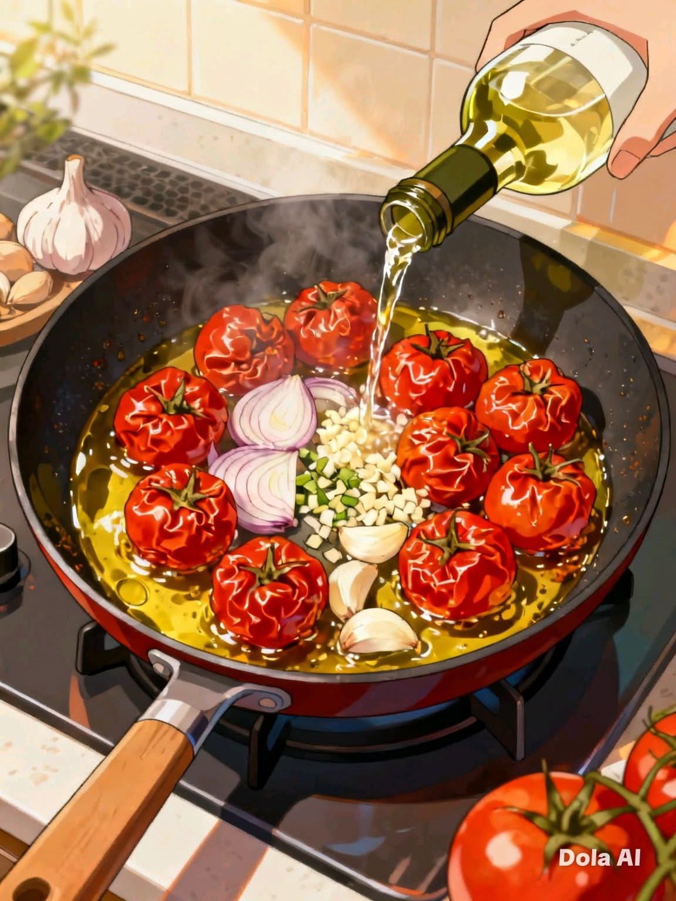

Изысканный вкус & вдохновение
Откройте мир гастрономических впечатлений вместе с нами. Свежие рецепты, авторская кухня и теплота каждой детали.
Каталог
Огромный выбор рецептов
О нас
История и команда
Путешествуй и пробуй
Кулинарные традиции мира
Каталог рецептов
Выберите категорию, чтобы посмотреть рецепты
Салаты
Классические и авторские рецепты
Супы
Согревающие первые блюда
Горячие блюда
Мясо, птица, рыба
Десерты
Сладости и выпечка
Напитки
Освежающие и согревающие напитки
Выпечка
Хлеб, пироги, булочки
Завтраки
Энергичное начало дня
Соусы и маринады
Домашние заправки
Салаты
Свежие, сытные и праздничные рецепты на любой вкус
Супы
Согревающие, наваристые и ароматные первые блюда
Горячие блюда
Сытные, ароматные и вкусные рецепты для всей семьи
Десерты
Сладкие удовольствия на любой вкус
Напитки
Освежающие, тонизирующие и согревающие напитки на любой вкус
Выпечка
Ароматная домашняя выпечка на любой вкус
Завтраки
Энергичное и вкусное начало дня
Соусы и маринады
Домашние заправки для любых блюд
Путешествуй и пробуй
Выберите страну, чтобы познакомиться с её кулинарными традициями и национальными блюдами
Италия
Паста, пицца, ризотто и настоящее джелато
Франция
Круассаны, улитки, рататуй и сырная тарелка
Япония
Суши, рамен, мисо и моти
Мексика
Такос, буррито, гуакамоле и сальса
Греция
Греческий салат, мусака, сувлаки и оливки
Таиланд
Том ям, пад тай, кокосовое молоко
Индия
Карри, самоса, тандури и чай масала
Испания
Паэлья, тапас, хамон и сангрия
Турция
Кебаб, баклава, рахат-лукум и турецкий чай
Марокко
Тажин, кускус, мятный чай
Вьетнам
Фо бо, нэмы, кафе с яйцом
Грузия
Хачапури, хинкали, сациви и чача
👥 О компании "СтильВкуса"
Мы — команда энтузиастов, объединённых любовью к кулинарии. Наша миссия — вернуть радость от приготовления пищи и объединять людей за одним столом.
Кострома, ул. Ивановская, 24А